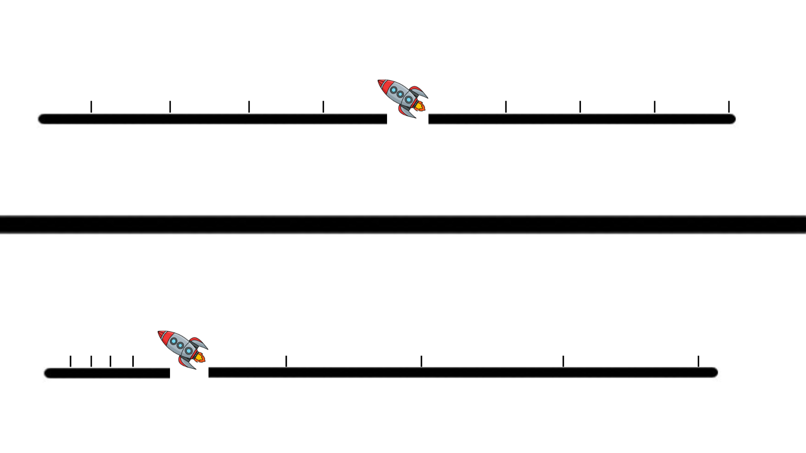

Are warp drives possible:
The Space Travel of the Future
Introduction
In April, 1961 the first human being left our planet. By the end of that same decade we touched another celestial body, the moon, for the first time. Ever since then, even with stagnation over the past couple decades, humans have had a presence in outer space. The scope of our presence in outer space has recently been enhanced with commercial companies such as Elon Musk’s SpaceX and Jeff Bezos’ Blue Origin. The mission of SpaceX is to get to Mars, and it seems likely that over the next century humans will not only reach this goal, but exceed it. We will continue, as it becomes easier and more frequent, to expand ourselves throughout our solar system. But what happens when we try to go beyond our solar system? The nearest star to our sun is four light years away. So if we are to make interstellar travel feasible we will need to exceed, or at least match, the speed of light in our spacecraft. Yet Einstein proved that nothing in the universe can exceed the speed of light. Not only is this a problem, but problems arise even when approaching the speed of light. When getting closer to the speed of light, the traveller experiences time dilation where time goes slower for them than for the rest of the universe. Furthermore, as our spacecraft gets faster, its mass will increase meaning that it will require more energy to move. So it seems now that if we are to travel between stars, we will need a new means of space travel.
Is there any way to exceed the speed of light?
Although nothing inside the universe can exceed the speed of light, there is no restriction on the movements of space itself. In fact, thanks to dark energy, we know that space itself can move faster than the speed of light. Dark energy shows that space, the universe itself, is expanding at a rate faster than the speed of light. So by manipulating this quality of space, Miguel Alcubierre, in 1994, proposed a concept now known as “The Warp Bubble”, which has now become a well-known staple of science fiction. The Warp Bubble effectively works by expanding the space behind an object, causing the space in front of the object to contract. So now that there is more space behind the object and less in front of it, the object has moved forward (without the object having to move itself). This can be thought of as catching a wave. When you're catching a wave on a surfboard you are pushed forward, toward the shore, by the wave. Now you can imagine that your surfboard is the spacecraft and the wave is the expanding space behind you. This expansion of space can be done faster than the speed of light, and hence allowing faster-than-light travel.

Why does this remain such a hurdle?
However, the Warp Bubble comes with many drawbacks restricting its future use. Unfortunately, these issues do not seem to be merely limitations due to our current technological standing, but rather conceptual predicaments. Initially, the Warp Bubble was proposed to require something known as negative energy, a theoretical form of energy known to be physically impossible. This problem has been solved, yet its solution, although making the Warp Bubble possible, is still quite the challenge. More recent research into this concept reveals that it would require immense quantities of energy, in the neighbourhood of 5 times the energy our sun produces in its entire lifetime to warp one aeroplane-size ship. Therefore, it seems that the Warp Bubble, although a promising idea, carries many conceptual troubles restricting it from use. Nonetheless, we certainly have some time until we will have had the technological and societal progress to use a Warp Bubble. Hopefully in this time some intelligent insight may be made.

.jpeg)